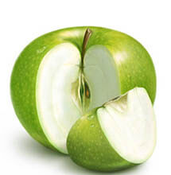
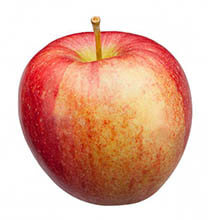
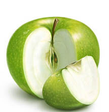
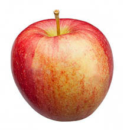
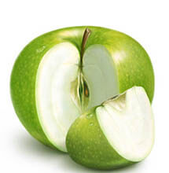
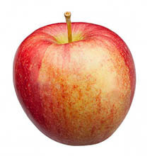

Авиакомпания Pegasus Airlines (Турция) сегодня открыла прямой регулярный рейс Анкара-Одесса-Анкара. Об этом сегодня на пресс-конференции сказал директор международного аэропорта «Одесса» Виталий Портянко, передает УНИАН.


Все сорта яблонь можно разделить по сроку созревания: летние созревают в августе, срок хранения плодов очень мал – не более 3-7 дней, созревание осенних приходится на начало сентября, срок хранения 1,5-3 недели, зимние сорта созревают в конце сентября, плоды могут храниться достаточно долго, несколько месяцев.

 


